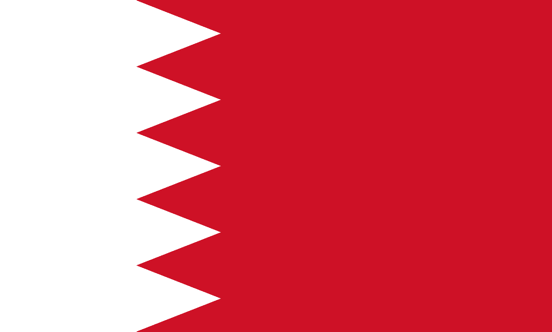

La Fórmula 1 no es solo autos rápidos, es la cúspide de la ingeniería, estrategia y adrenalina. En esta guía, te ayudaremos a entender cada aspecto de este fascinante deporte, desde las reglas básicas hasta los detalles más técnicos. Si eres un fanático veterano o alguien nuevo, aquí encontrarás todo lo que necesitas saber para seguir las carreras como un experto.
El piloto argentino Franco Colapinto debutó en la Fórmula 1 con el equipo Williams Racing durante el Gran Premio de Italia 2024, tomando el lugar de Logan Sargeant. Aunque ha competido en las últimas carreras de la temporada, Williams ya ha confirmado a sus pilotos para 2025, lo que deja a Colapinto en busca de un nuevo equipo. Recientemente, Red Bull ha mostrado interés en ficharlo para la próxima temporada, lo que lo convierte en uno de los pilotos jóvenes más prometedores en la Fórmula 1.
Cada fin de semana de Gran Premio trae emoción, y aquí te mantendremos informado sobre los eventos importantes de cada jornada. Desde las prácticas libres hasta la carrera, te explicaremos todo lo que sucede en la pista.
| # | GRAN PREMIO | CIRCUITO | FECHA |
|---|---|---|---|
| 1 |  Baréin GP | Baréin Circuito Internacional | 2 Mar |
| 2 | Arabia Saudita GP | Circuito Jeddah Street | 9 Mar |
| 3 | Australia GP | Albert Park | 24 Mar |
| 4 | Japón GP | Circuito Suzuka | 7 Abr |
| 5 | China GP | Circuito Internacional Shanghai | 21 Abr |
| 6 | Miami GP | Autódromo Internaciona de Miami | 5 May |
| 7 | Emilia Romagna GP | Autódromo Enzo e Dino Ferrari | 19 May |
| 8 | Mónaco GP | Circuito de Mónaco | 26 May |
| 9 | Canadá GP | Circuito Gilles Villeneuve | 9 Jun |
| 10 | España GP | Circuito de Cataluña | 23 Jun |
| 11 | Austria GP | Red Bull Ring | 30 Jun |
| 12 | Inglaterra GP | Circuito Silverstone | 7 Jul |
| 13 | Hungría GP | Hungaroring | 21 Jul |
| 14 | Bélgica GP | Spa-Francorchamps | 28 Jul |
| 15 | Paises Bajos GP | Circuito Zandvoort | 25 Ago |
| 16 | Italia GP | Autodromo Nazionale Monza | 1 Sep |
| 17 | Azerbaijan GP | Circuito Baku City | 15 Sep |
| 18 | Singapur GP | Circuito Marina Bay Street | 22 Sep |
| 19 | Estados Unidos GP | Circuito de las Américas | 20 Oct |
| 20 | México GP | Autódromo Hermanos Rodriguez | 27 Oct |
| 21 | Brasil GP | Autódromo Jose Carlos Pace Interlagos | 3 Nov |
| 22 | Las Vegas GP | Circuito Las Vegas Street | 24 Nov |
| 23 | Lusail GP | Circuito Internacional Losail | 1 Dic |
| 24 | Abu Dhabi GP | Circuito Yas Marina | 8 Dic |